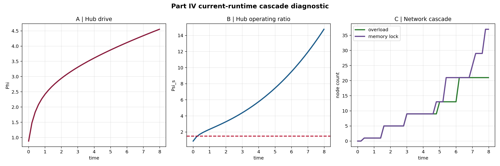
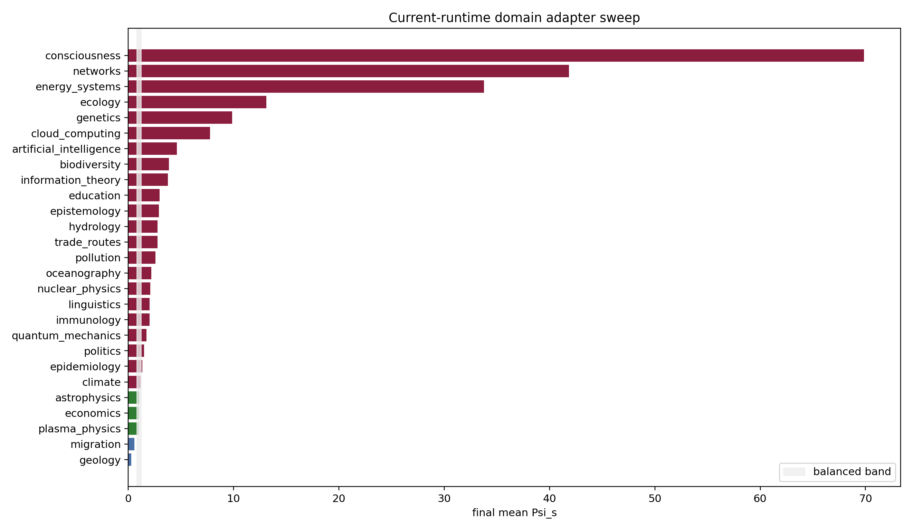

Generated outputs are candidate simulation diagnostics and falsification targets, not empirical proof.
Final hub Psi_s: 14.764796125341016 |
overloaded nodes: 21 |
memory-locked nodes: 37


| Part | Domain | Regime | Final mean Psi_s |
|---|---|---|---|
| Part D | consciousness | overload | 69.84 |
| Part B | networks | overload | 41.856 |
| Part B | energy_systems | overload | 33.775 |
| Part D | ecology | overload | 13.0997 |
| Part D | genetics | overload | 9.85544 |
| Part B | cloud_computing | overload | 7.77012 |
| Part B | artificial_intelligence | overload | 4.60152 |
| Part A | biodiversity | overload | 3.84259 |
| Part D | information_theory | overload | 3.75667 |
| Part C | education | overload | 2.96157 |
| Part G | epistemology | overload | 2.9117 |
| Part A | hydrology | overload | 2.76825 |